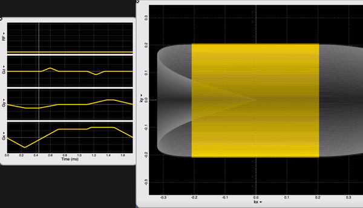
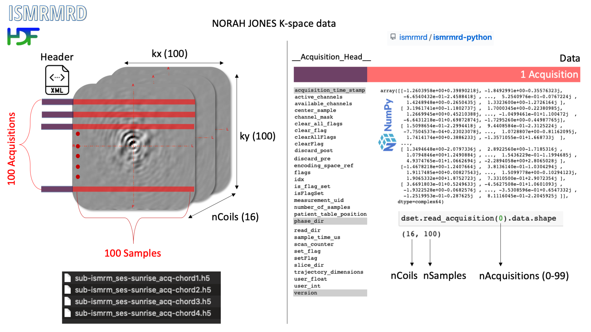

1️⃣ Know your data (at least) at the level you are dealing with it
NOt RApid Honestly JOyful NEvertheleSs (NORAH JONES) Readout¶
We are looking at the readout block of our NORAH JONES sequence /Sequence/CartesianReadout3D.spv. If you are an OSX user, you can inspect sequence components using SpinBench!
We have 100 acquisitions (or TRs or Phase Encodings) that are ordered outside-in to sample the center of the k-space the latest (steady-state). At each acquisition we have 100 samples. NORAH JONES sequence acquires all 4 images in this fashion, at the same location. You can see all the readout parameters below:
NORAH JONES Raw Data in ISMRM-RD Format¶

2️⃣ Mise en place
Let’s read and parse the data using NumPy relying purely on metadata provided by python-ismrmrd.
Import ISMRM-RD modules üß≤¬∂
from ismrmrd import Dataset as read_ismrmrd
from ismrmrd.xsd import CreateFromDocument as parse_ismrmd_header
import numpy as np
import plotly.express as px
import plotly.graph_objects as go
/Users/agah/opt/anaconda3/envs/jbnew/lib/python3.6/importlib/_bootstrap.py:219: RuntimeWarning: numpy.ufunc size changed, may indicate binary incompatibility. Expected 192 from C header, got 216 from PyObject
return f(*args, **kwds)
/Users/agah/opt/anaconda3/envs/jbnew/lib/python3.6/importlib/_bootstrap.py:219: RuntimeWarning:
numpy.ufunc size changed, may indicate binary incompatibility. Expected 192 from C header, got 216 from PyObject
/Users/agah/opt/anaconda3/envs/jbnew/lib/python3.6/importlib/_bootstrap.py:219: RuntimeWarning:
numpy.ufunc size changed, may indicate binary incompatibility. Expected 192 from C header, got 216 from PyObject
Create a simple list storing file names üóǬ∂
files = list()
for chord in ['chord1','chord2','chord3','chord4']:
files.append('./KSpace/sub-ismrm_ses-sunrise_acq-' + chord + '.h5')
files
['./KSpace/sub-ismrm_ses-sunrise_acq-chord1.h5',
'./KSpace/sub-ismrm_ses-sunrise_acq-chord2.h5',
'./KSpace/sub-ismrm_ses-sunrise_acq-chord3.h5',
'./KSpace/sub-ismrm_ses-sunrise_acq-chord4.h5']
Explore acq-chord1 file üïµÔ∏è‚Äç‚ôÄÔ∏è¬∂
Read data & parse header¶
# Read the first file to explore data
dset = read_ismrmrd(files[0], 'dataset')
# Parse header
header = parse_ismrmd_header(dset.read_xml_header())
# See what's in the header
print('header has:',list(vars(header).keys()))
print('----')
print('header.encoding[0] has:',list(vars(header.encoding[0]).keys()))
---------------------------------------------------------------------------
OSError Traceback (most recent call last)
~/opt/anaconda3/envs/jbnew/lib/python3.6/site-packages/h5py/_hl/files.py in make_fid(name, mode, userblock_size, fapl, fcpl, swmr)
201 try:
--> 202 fid = h5f.open(name, h5f.ACC_RDWR, fapl=fapl)
203 except IOError:
h5py/_objects.pyx in h5py._objects.with_phil.wrapper()
h5py/_objects.pyx in h5py._objects.with_phil.wrapper()
h5py/h5f.pyx in h5py.h5f.open()
OSError: Unable to open file (unable to open file: name = './KSpace/sub-ismrm_ses-sunrise_acq-chord1.h5', errno = 2, error message = 'No such file or directory', flags = 1, o_flags = 2)
During handling of the above exception, another exception occurred:
OSError Traceback (most recent call last)
<ipython-input-3-19724ce40fda> in <module>
1 # Read the first file to explore data
----> 2 dset = read_ismrmrd(files[0], 'dataset')
3
4 # Parse header
5 header = parse_ismrmd_header(dset.read_xml_header())
~/opt/anaconda3/envs/jbnew/lib/python3.6/site-packages/ismrmrd/hdf5.py in __init__(self, filename, dataset_name, create_if_needed)
148 # Open the file
149 if create_if_needed:
--> 150 self._file = h5py.File(filename, 'a')
151 else:
152 self._file = h5py.File(filename, 'r+')
~/opt/anaconda3/envs/jbnew/lib/python3.6/site-packages/h5py/_hl/files.py in __init__(self, name, mode, driver, libver, userblock_size, swmr, rdcc_nslots, rdcc_nbytes, rdcc_w0, track_order, fs_strategy, fs_persist, fs_threshold, **kwds)
425 fapl, fcpl=make_fcpl(track_order=track_order, fs_strategy=fs_strategy,
426 fs_persist=fs_persist, fs_threshold=fs_threshold),
--> 427 swmr=swmr)
428
429 if isinstance(libver, tuple):
~/opt/anaconda3/envs/jbnew/lib/python3.6/site-packages/h5py/_hl/files.py in make_fid(name, mode, userblock_size, fapl, fcpl, swmr)
202 fid = h5f.open(name, h5f.ACC_RDWR, fapl=fapl)
203 except IOError:
--> 204 fid = h5f.create(name, h5f.ACC_EXCL, fapl=fapl, fcpl=fcpl)
205 else:
206 raise ValueError("Invalid mode; must be one of r, r+, w, w-, x, a")
h5py/_objects.pyx in h5py._objects.with_phil.wrapper()
h5py/_objects.pyx in h5py._objects.with_phil.wrapper()
h5py/h5f.pyx in h5py.h5f.create()
OSError: Unable to create file (unable to open file: name = './KSpace/sub-ismrm_ses-sunrise_acq-chord1.h5', errno = 2, error message = 'No such file or directory', flags = 15, o_flags = a02)
Grab some useful metadata values¶
nX = header.encoding[0].encodedSpace.matrixSize.x
nY = header.encoding[0].encodedSpace.matrixSize.y
nZ = header.encoding[0].encodedSpace.matrixSize.z
nCoils = header.acquisitionSystemInformation.receiverChannels
print('nX: ', nX,'nY: ', nY,'nZ: ', nZ, 'nCoils: ', nCoils)
Initialize a 3D NumPy matrix to store multi-channel raw data üóɬ∂
We already know the dimensions! Given that we expect complex data, we can set dtype=complex64 üòé For simplicity I will omit nZ (we have one slice).
raw = np.zeros((nCoils, nX, nY), dtype=np.complex64)
print('Raw data shape: ', raw.shape)
Loop over acquisitions to fill out raw¶
The dset object we created from the ISMRM-RD Dataset (we used alias read_ismrmrd) class has an important method: read_acquisition. We will loop over nY to read k-space stripes (cartesian) one by one.
for tr in range(nY):
raw[:,:,tr] = dset.read_acquisition(tr).data
Is not Plotly simply amazing?¶
This feature has been introduced in v4.14.0: with a single line of code you can animate or grid display 3D data.
fig = px.imshow(raw.real,animation_frame=0, color_continuous_scale='viridis', labels=dict(animation_frame="Channel"),template='plotly_dark')
fig.update_layout(title='Channel Raw')
3️⃣ Time to perform a modest reconstruction :)
from scipy.fft import fft2, fftshift
from scipy import ndimage
Loop over channels and fft2¶
Tip: remove fftshift from fourier_ellipsoid function call, set filter size > 20, then play the animation along with your remix from the first notebook üéµüé∂
im = np.zeros(raw.shape)
# Let's apply some ellipsoid filter.
raw = ndimage.fourier_ellipsoid(fftshift(raw),size=2)
#raw = ndimage.fourier_ellipsoid(raw,size=2)
for ch in range(nCoils):
# Comment in and see what it gives
im[ch,:,:] = abs(fftshift(fft2(raw[ch,:,:])))
# Normalize
im[ch,:,:] /= im[ch,:,:].max()
fig = px.imshow(im,color_continuous_scale='viridis', animation_frame=0,template='plotly_dark')
fig.update_layout(title='Channel Recon').show()
im_sos = np.sqrt(np.sum(im*np.conj(im),axis=0))
# Normalize
im_sos /= im_sos.max()
# Crop a bit
fig = px.imshow(im_sos[10:90,0:80],template='plotly_dark',color_continuous_scale='viridis')
fig.update_layout(title='Sum of Squares Combine')
Exercises
Rotate/flip images
Reconstruct
SoSimages for every TR by writing some functions and collect them into a 3D matrix.Display voxel intensity changes over TRs at the center of each (14) sphere